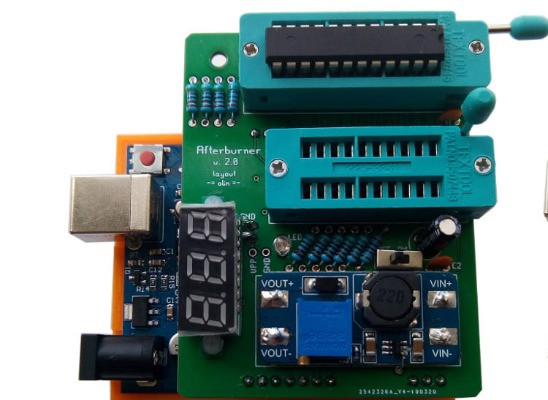
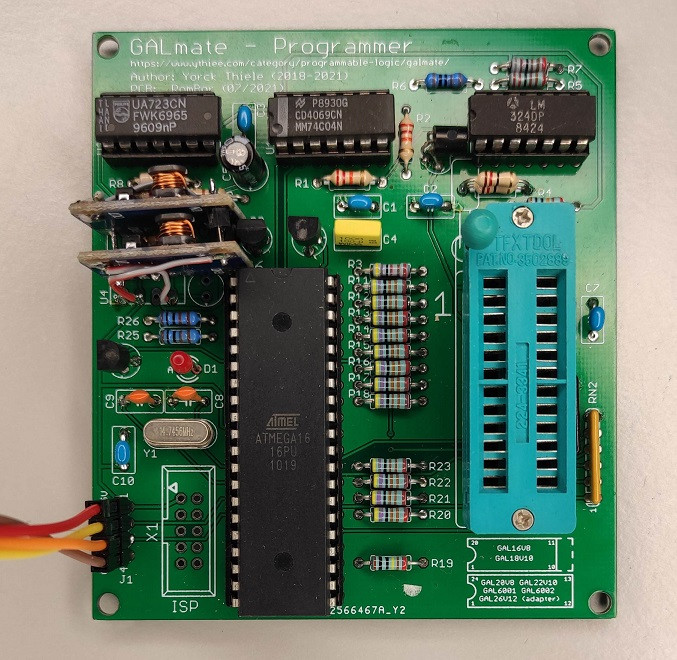
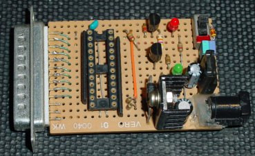
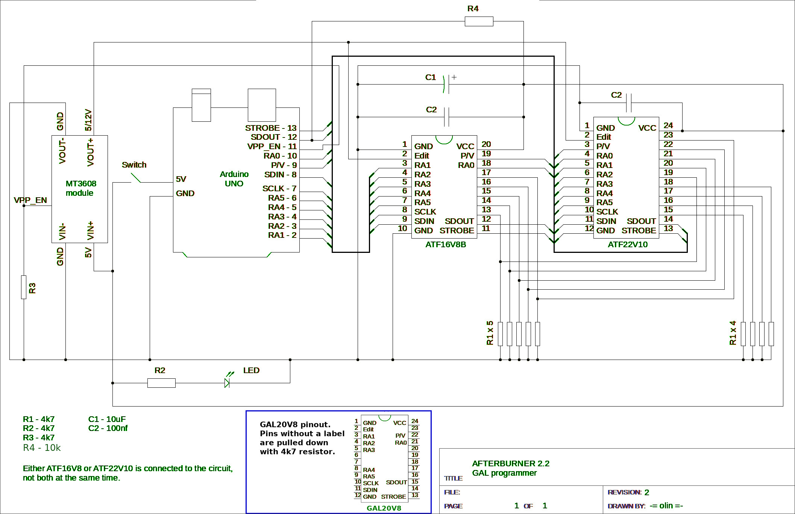
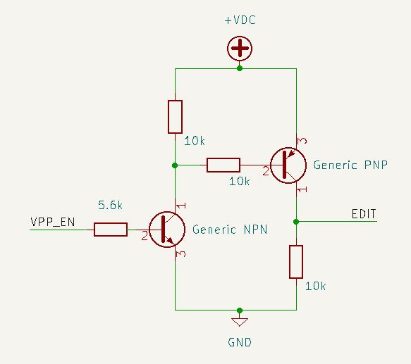
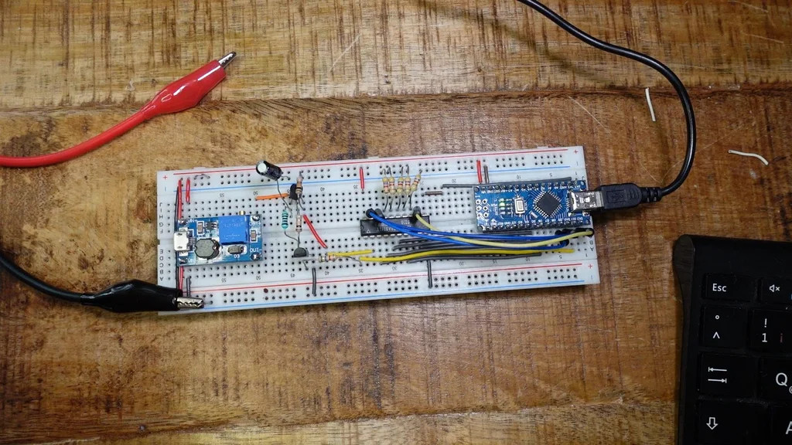

參考資料：
https://github.com/ole00/afterburner
https://bhabbott.net.nz/atfblast.html
https://www.ythiee.com/2021/06/06/galmate-hardware/
https://www.instructables.com/Make-Your-Own-Microchips/
https://www.pcbway.com/project/shareproject/Afterburner_____GAL_chip_programmer_for_Arduino.html
PCBWay上展示的成品





